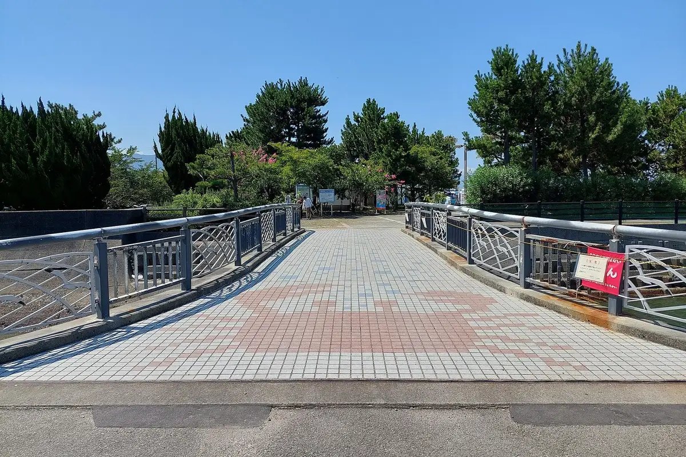
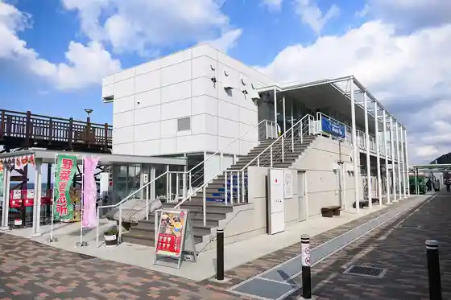
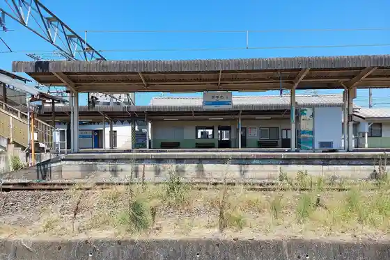

Iyo
Iyo · Ehime
Iyo
Highlighted on the Ehime map.

Stay
Hana no Mori Hotel
Uerupia Iyo
Tsutaya Ryokan
Iyo Purinsu Hotel
HOTEL AZ Ehime Iyo Mise
Dining
Mitsu Hamayaki Iyo Nada
Uotami Iyo Mise
Rapi
Sorriso
Izakaya Yugiri
DAIDOKORO CAFE MOKU
Rudoryuroran
Hiyoshi
Maruserobekarii
Janjaka Iyo Mise
Kitchen ichi-nichi
TSUYAKICHI Futami Shiisaido Koen Mise
Okabe
Ryori Iroha
Shino Ya
Kurafuto Village
Onsen
Hana no Mori Hotel Hana Baths
Uerupia Iyo Public Bath
Tsutaya Ryokan Public Bath
Iyo Purinsu Hotel Tennen Onsen
Sights
Goshiki Hama Park
Futami Shiisaido Park

Iyo Eki

Man'an Minato Kyu Lighthouse